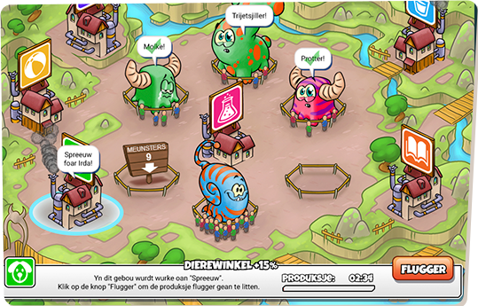

video games are desighned to engages plyers in
challenges and activities that require critical thinking,
problem-solving,and decision making skills.
"APPLY THEM TO REAL WORLD SITUATIONS"

FOSTER SOCIAL
EMOTIONAL LEARNING
MOTIVATE STUDENTS TO TAKE RISKS
HOME